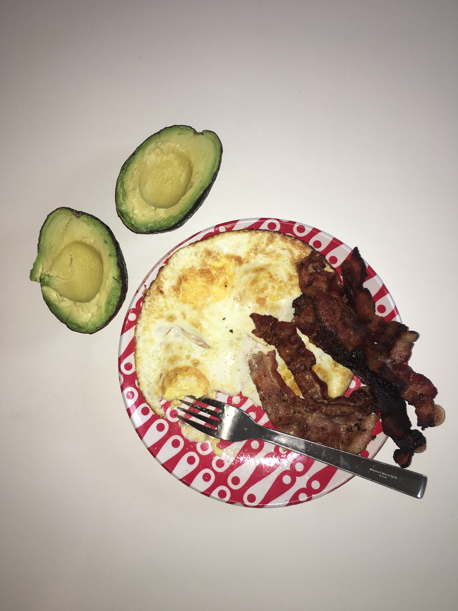
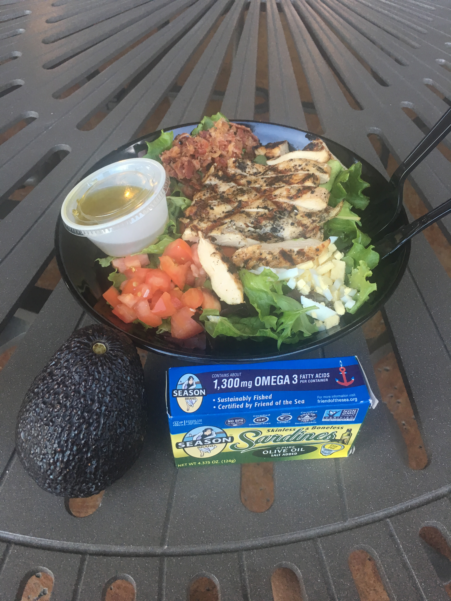
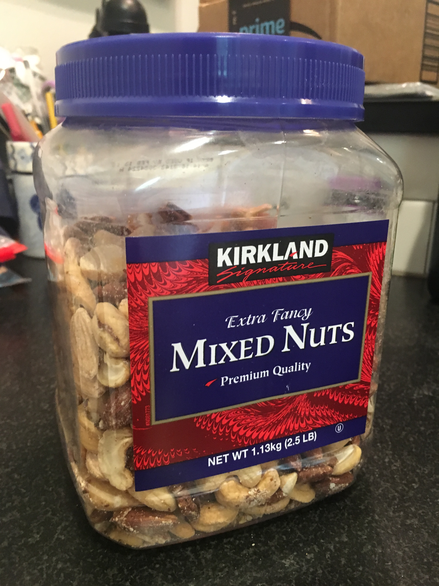
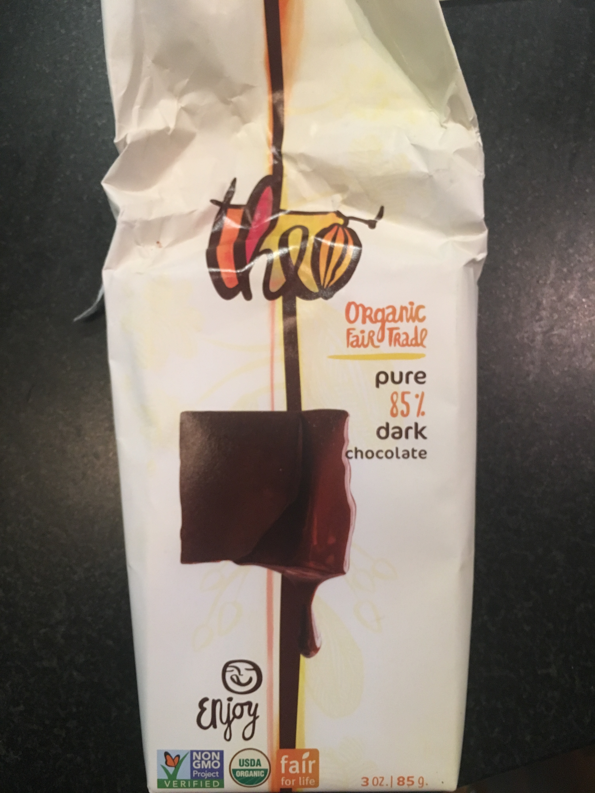

Here is a really good resource for what to eat on the ketogenic diet. It also walks you through the steps of figuring out how much
you need to be eating each day. I highly recommend checking it out and referring back to it as much as you need.
This app called KetoDiet also has a ton of recipes and is really helpful when it comes to figuring out what to eat or if you can eat something.
And, well, if you just want to see what I did, keep reading on my friend. Click on the blue meals to see how to prepare them.
My Tips
-The bottom line is, you can’t have carbs. And carbs are in basically EVERYTHING. So be careful.
-Following that, learn how to read nutritional information. Look at things like calories from fat and grams of carbohydrates. Keeping track of your macronutrients is an important part of keto.
-Get a calorie counter like My Fitness Pal. Not only will you be able to track how much you are eating each day, but it will break down your macronutrient ratio and other helpful stuff like that.
-Avocado goes well with just about every meal, and they have tons of good fat and essential nutrients. I eat about two a day. If you don’t like avocado, well...that sucks.
-Nuts and cheese are good to snack on throughout the day, if you get hungry or just if you are trying to pack in more calories.
-Don’t eat too much protein. It can kick you out ketosis if you have too much, just like carbs.
-Drink plenty of water. I mean it. And make sure you’re getting enough electrolytes, through food or supplements.
Otherwise you’ll just pee out all the water and dehydrate yourself. I add salt to just about everything.
-When buying stuff like ranch dressing or certain meats, always look for the fatty versions
-Cook everything (vegetables, eggs, meat) in either butter or coconut oil. This will get in a little extra fat and tastes delicious!
-You're going to crave some crunchy stuff. Things like carrots, celery, bacon, nuts, and pickles can all help with that
-Don’t be afraid to eat out. It may be a little stressful at first but don’t hesitate to be that annoying person who completely changes what is on the menu (swap olive oil for ranch, add bacon, no tomatoes, etc)
What to Eat:
If it’s got a lot of fat in it, go for it. Shoot for things with under 5 grams of carbs, the lower the better.
I usually look for stuff with the majority of calories from fat and the rest from protein.
Authority nutrition says to base your meals around these ingredients, and after my experience I totally agree:
- Fatty meat
- Grass fed butter
- Eggs
- Avocados (don’t worry about the carbs in this, they are all from fiber)
- Nuts
- Healthy, fatty oils
- Low carb veggies, cooked in fat
- Cheese
What Not to Eat:
Carbs, duh. This means sugar, too. Sugar is a carb. Hate to break it to ya. So that means…
- All things sugary. Sodas, candy, smoothies, dessert
- Italian food (sorry!). Pasta, bread, gluten in general...all carbs.
- Rice is a carb. Fried foods are carbs. Stay away.
- Potatoes and beans have carbs, too. In case you didn’t know. Don’t eat em.
- Cereal. If this made you sad...you actually eat cereal in the first place? Come on. I know it’s good, but it’s so bad for you.
- Fruit is pretty much a no go, although maybe some berries for dessert in very small quantities
- Stuff labeled “low fat”
- "Sugar free" stuff
Example Meal Guide:
This is pretty much what I ate, grouped by when I ate it. A typical day for me would consist of one bullet point from each meal
(breakfast, lunch, dinner) with a couple snacks thrown in there. I probably had “dessert” only three times over two weeks.
Feel free to pick and choose what sounds good, move things around, and change it up a little.
This will just start you off with some good ideas, but what you eat is totally customizable and up to you. Get creative with it!
However, my advice to you is this: get into some sort of routine, and stick to it. Throw in something new every now and then, but don't
try to make something awesome every single meal. The whole point of keto is also to have really simple, few ingredient dishes.
Breakfast
- Butter Coffee
- That's it! Have this every morning and you should be feeling full of energy and not even hungry for about 4 hours!
Plus, you won't feel jittery or experience the normal crash you typically get with coffee. You can also do it with tea or bone broth.

Lunch
- Eggs, avocado, and either bacon, salmon, sausage, sardines or some form of fatty meat.
Cook the eggs in about a tablespoon of butter or coconut oil. Make sure to add plenty of salt.
- Lettuce Wrap with cheese, add bacon, avocado, and mayonaisse. Pickles, too, if you like em!
- Fajita beef (or chicken) with lots of guacamole, sour cream, and cheese
- Different kinds of omelets--use veggies, mushrooms, cheese, and meat. Yum!
- You can always add something from the snack list to boost the calories, like nuts
- These are what I usually ate, and didn’t get bored of it after two weeks.
It’s really easy to find other creative ideas on Google or the KetoDiet app if you’re looking for more variety.

Dinner
- A salad with leafy greens, feta cheese, olive oil, avocado, and some form of meat (usually chicken) I have this about every other night.
- Slow cooked porkwith avocado, cilantro, lime juice, a salad, and mexican blend cheese
- A fatty ribeye steak with avocado and asparagus cooked in butter
- Chicken wings in buffalo sauce (probably my favorite meal)
- Chicken thighs dipped in a fatty sauce like ranch or homemade buffalo, with butter-broccoli covered broccoli
- Get a mighty fine cheese burger in a bowl, add bacon, avocado (or bring your own, like me), mayonnaise. Good for lunch, too.

Snacks
- Carrots and artichoke dip
- Celery and cream cheese
- Babybel cheese circles
- Nuts
- Beef Jerky
- Smoked Salmon
- Guacamole
- Pork Rinds (don't have too many. They also don't taste that good, tbh)
- Sardines packed in olive oil, if you can stand the fishy-ness

*Note: Fancy kind not required. But I would recommend having almonds, walnuts, and mac nuts
Dessert

How to Make:
Butter Coffee
- Brew two cups of your favorite Coffee (or Tea!)
- Pour into a blender
- Add 2 tbsp of grass fed butter to the blender
- Add 1 tbsp of MCT Oil to the blender
- Blend it up for about 20 seconds and you're ready to go!
*Note: Play around with the amount of MCT Oil--I recommend
starting small and building up to around 1-1.5 tbsp
Slow cooked pork
Here's the recipe
- I didn't actually make the tacos, but just ate the pork with some avocado and other toppings like onion, cilantro, and lime.
Buffalo Chicken Wings
- Get some frozen chicken wings, but look for the fattiest version
- Follow the packaging instructions to cook those in the oven, or...
- Throw about 20 of them in a ziploc and add 2 tbsp of baking powder. Season with salt and pepper, and shake it up.
- Then stick them in a pan and brush melted ghee on each one.
- Stick those in the oven for about 45 min at 400F, or until they look ready. Ask your mom!
- While those are going, make a buffalo sauce:
- 4tbsp grass fed butter, 1 minced clove of garlic in a bowl. Stick in the microwave until melted.
- 1/4 cup frank's buffalo sauce, 1 tsp paprika, 1 tsp cayenne pepper. Add a lil' salt and pep.
- Mix it all up together and then pour over the chicken wings in a bowl once they're done!
Butter-Broccoli Covered Broccoli
- Steam a big ol pot of broccoli
- If you don't know how to steam something (it's ok, I didn't either), you stick
it into a spaghetti strainer and let it sit over a big pot of boiling water. The hot steam will cook it.
- Once it starts looking nice and green and yummy, take about half of the broccoli and put into a blender.
- Blend that up with like 7 tablespoons of butter (this was for 3 people, so scale accordingly)
- Put the steamed broccoli into a bowl and then pour the blended "sauce" over the broccoli!
- It's delicious. Trust me.
Homemade Whipped Cream
- Get some heavy whipping cream (essentially 100% fat)
- Think about how many cups of whipped cream you are going to eat. Pour half of that into a big bowl
- Go at that heavy cream with an electric hand mixer on medium speed, or high if you're a rebel.
- Keep going...almost there
- Wow this takes a while
- If it starts looking like it's getting more solid, squirt a little stevia in there (by 1 squirt I mean like 1/4-1/3 tsp)
- Keep whipping that cream until it gets real solid. Turn off the mixer occasionally and check how its looking. You'll know when.
- That's it! Who knew heavy whipping cream can be turned into literal whipped cream??! I sure didn't
- It it straight up with a spoon or fork if you're cool, or with some blueberries/strawberries. Don't have too many, though.
Keto IceCream
I got this from Tools of Titans, by the way. I'm not trying to say this is my own invention
- Stir the following into a thick mousse and stick it in the freezer until it takes on an
icecream like consistency:
- 2 cups sour cream
- 1 tablespoon dark chocolate baking cocoa
- 2 pinches of sea salt, 2 pinches of cinnamon
- A squirt of stevia (1/4 tsp)
- 1/3-1/2 cup blueberries, if you haven't eaten many carbs today or you worked out.
- When you're ready to eat it, go for it or add toppings like whipped cream (shown above) or heated coconut oil.
Peanut Butter Shake
This is from a website, but it's good. Which is why I'm telling you how to make it
- Stick the following into a blender and blend until smooth
- 1/2 cup coconut cream or full fat coconut milk
- 1 cup heavy cream
- 1 tsp vanilla extract
- 1 cup ice
- 1/8 tsp stevia
- Oh yeah, and peanut butter, duh. Use 2 tablespoons, and make sure the ingredients are just nuts and salt.